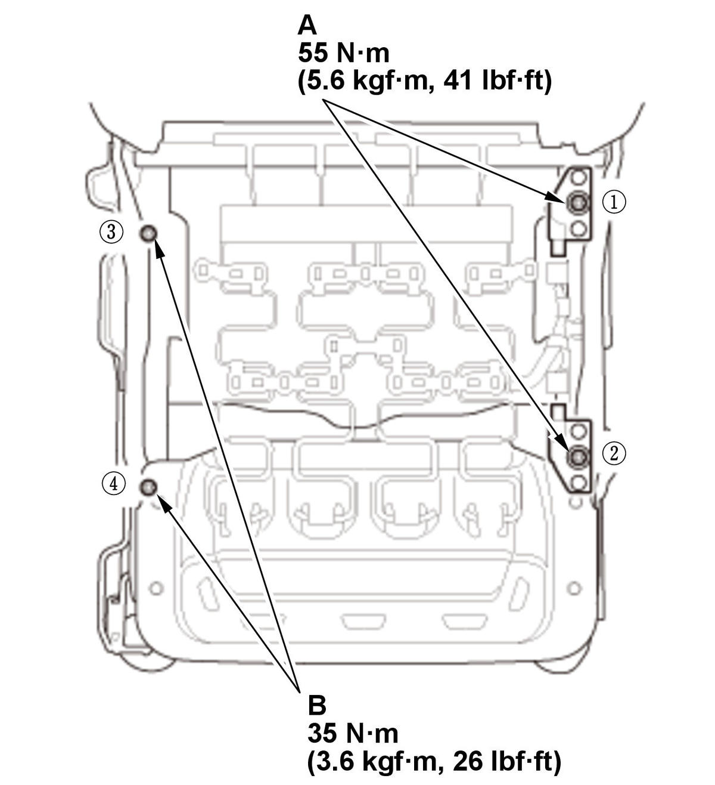
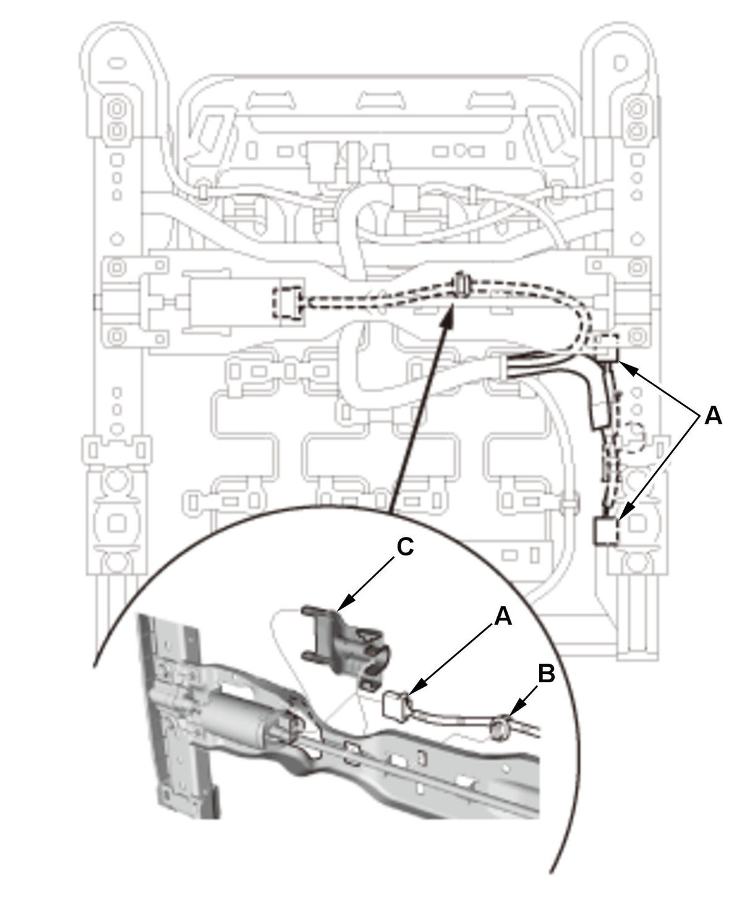

Front Passenger's Weight Sensor Removal and Installation: Installation
SRS components are located in this area. Review the SRS component locations and the precautions and procedures before doing repairs or service.
NOTE:
- Be sure to install the harness wires so they are not pinched or interfering with other parts.
- Manual seat: The front passenger's weight sensor is part of the seat frame and must be replaced as an assembly.
- Power Seat: The front passenger's weight sensor is part of the seat rail and must be replaced as an assembly.
Manual Seat
- Front Passenger's Seat Frame/Front Passenger's Weight Sensors - Install
Install the front passenger's seat frame/front passenger's weight sensors as an assembly .
- 12 Volt Battery Terminal - Connect
- Seat Operation - Confirm
1. Move the front seat and the seat-back through their full ranges of movement, making sure the harnesses are not pinched or interfering with other parts. - Front Passenger's Weight Sensor - Initialize
- SRS Operation - Confirm
1. Turn the vehicle to the ON mode, and check that the SRS indicator comes on for about 6 seconds and then goes off.
Power Seat
- Front Passenger's Seat Rail/Front Passenger's Weight Sensors - Install
1. Install the front passenger's seat rail/front passenger's weight sensors as an assembly (A) to the seat frame as shown, and loosely tighten the new weight sensor nuts (B) and the mounting nuts (C).
NOTE: The bushings and collars can be identified by their color. Make sure to install the bushings and collars as shown.Fig 1: Front Passenger's Seat Weight Sensor Mounting Components With Tightening Sequence And Torque Specifications (Power Seat)

Courtesy of HONDA, U.S.A., INC.HONDA, U.S.A., INC.2. Tighten weight sensor nuts (A) and the mounting nuts (B) to the specified torque.
NOTE: Tighten the nuts in the numbered sequence shown.3. Connect the connectors (A) and install the clip (B). 4. Install the slide motor cover (C).
- Front Seat Recline Inner/Outer Cover - Install
- Front Seat Cushion Cover/Pad - Install
- Front Seat-Back Cover/Pad - Install
- Front Passenger's Seat - Install
- 12 Volt Battery Terminal - Connect
- Seat Operation - Confirm
1. Move the front seat and the seat-back through their full ranges of movement, making sure the harnesses are not pinched or interfering with other parts. - Front Passenger's Weight Sensor - Initialize
- SRS Operation - Confirm
1. Turn the vehicle to the ON mode, and check that the SRS indicator comes on for about 6 seconds and then goes off.